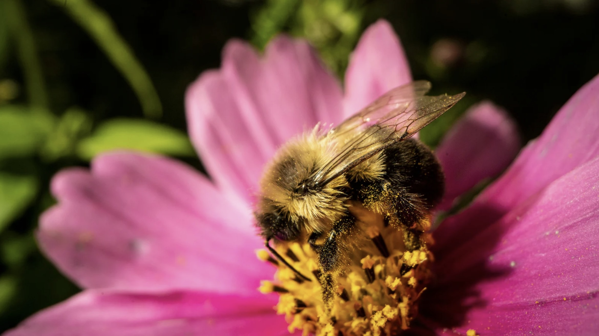
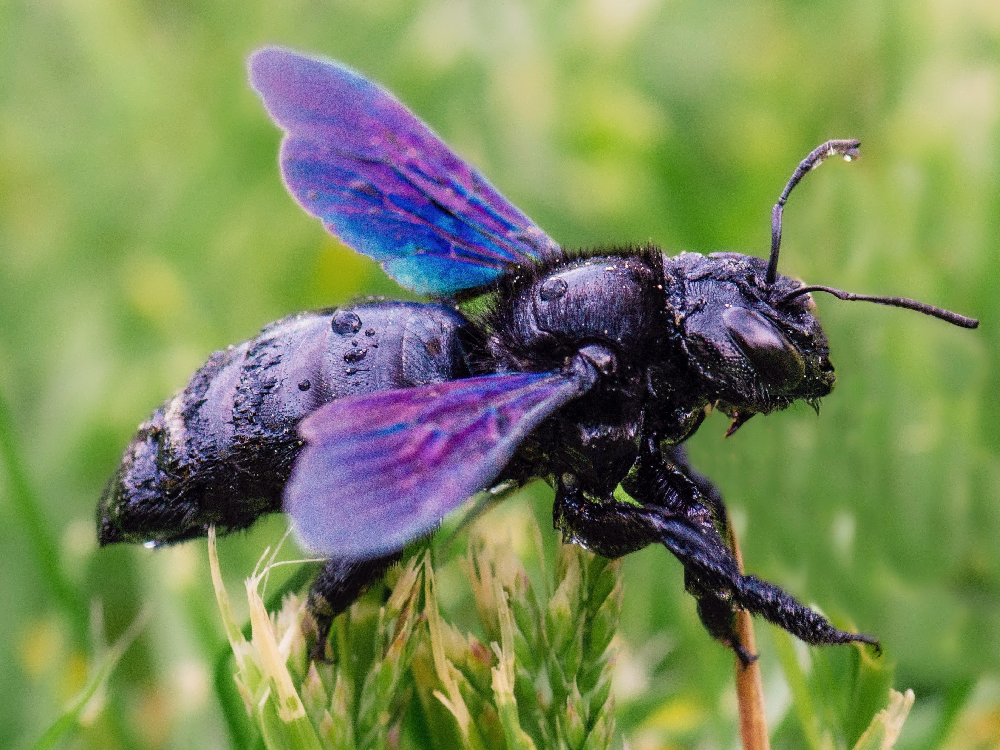
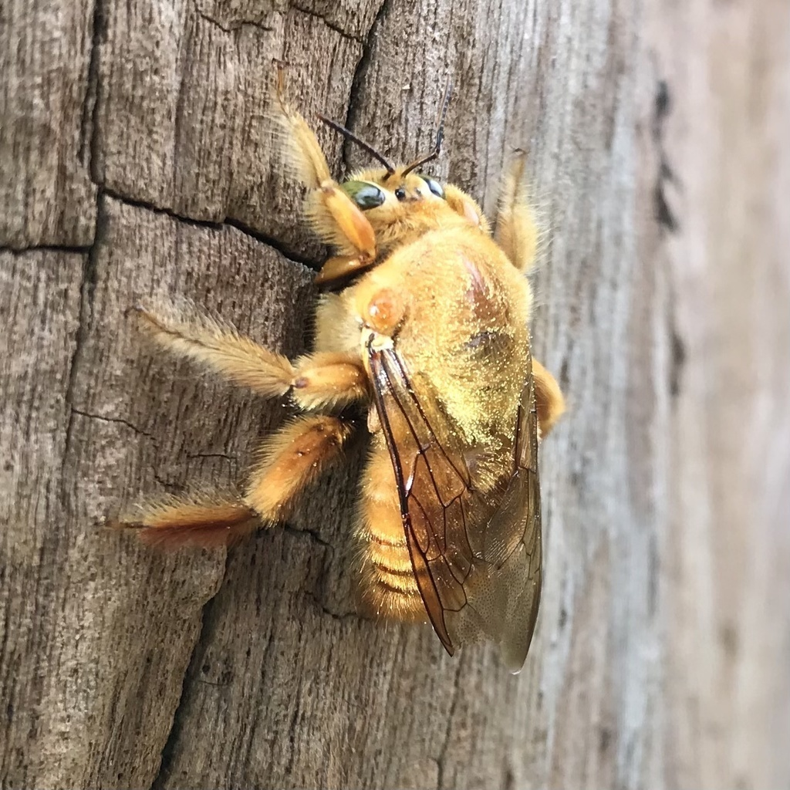

Bees are fascinating insects that are found all over the world. They are known for their role in pollination and their production of honey. Many bees live in colonies but some species are solitary.
Bees are vital pollinators responsible for fertilizing roughly 75% of flowering plants and 35% of global food crops, directly supporting ecosystems and agriculture. They collect pollen and nectar for food, build hives, make honey/beeswax, and maintain, guard, or expand their colony.

The American bumblebee is a large, fuzzy bee found in North America. It is known for its important role in pollination and its ability to buzz and vibrate flowers to release pollen.

Violet carpenter bees are large, solitary bees found in North America. They are known for their metallic violet coloration and their ability to excavate tunnels in wood.

Valley carpenter bees, California's largest bees, are vital, native pollinators that "buzz pollinate" flowers to release pollen, though they sometimes act as "nectar robbers" by piercing tubular flowers.